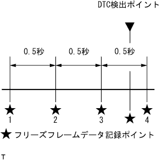

EFIシステム フリーズフレームデータ |
SST(TaSCAN)を使用して、画面表示に従って操作を行い、[診断機能メニュー]-[ダイアグコード確認画面]よりフリーズフレームデータを記録しているダイアグコード(Fを表示)を選択する。
DLC3にSST(TaSCAN)を接続する。
IG ONにする。
[診断機能メニュー]-[ダイアグコード·フリーズデータ]を選択する。
ダイアグコード表示画面にて、検出されたダイアグコードが表示される。
フリーズフレームデータを確認したいダイアグコードを選択する。
|  |
フリーズデータ表示画面にて時系列フリーズフレームデータを確認したい項目を選択する。
| 項目名 | 短縮記号 |
|---|---|
| エンジン回転数 | ESPD |
| エンジン負荷値 | CALO |
| 車速 | SPD1 |
| 点火時期#1 | IGT |
| 噴射時間#1(ポート) | INJO |
| エンジン冷却水温 | THW |
| 吸入空気温度 | THA |
| 吸入空気量 | MAF |
| 始動時水温 | THWS |
| 始動時吸気温 | THAS |
| 補機バッテリ電圧 | BATT |
| 大気圧 | ATM |
| スタータ信号 | STA |
| スタータSW | STSW |
| アイドルSW | IDL |
| ニュートラルスタートSW | NSW |
| 電気負荷信号 | ELS |
| ストップランプSW | STP |
| パワステSW | PSSW |
| サーキットオープニングリレー | FPC |
| エアコン信号 | A/C |
| F/B実施状態バンク1 | F-S1 |
| F/B補正値バンク1 | SFT1 |
| F/B学習値バンク1 | LFT1 |
| 目標空燃比 | AFRT |
| O2センサ電圧B1S1 | Ox11 |
| O2センサ電圧B1S2 | Ox12 |
| A/Fセンサ実空燃費B1S1 | FT11 |
| A/Fセンサ電圧B1S1 | AF11 |
| EGR開度 | EGRO |
| A/Fセンサ電流B1S1 | AFI11 |
| スロットルセンサNo.1開度 | THP1 |
| スロットルセンサNo.2開度 | THP2 |
| アクセルセンサNo.1開度 | ACP1 |
| アクセルセンサNo.2開度 | ACP2 |
| スロットル開度(ECU認識値) | THPO |
| スロットルモータ出力 | THRM |
| ノック制御値 | KNFB |
| ノック補正学習値 | KNCV |
| パージVSV駆動Duty比 | EVAP |
| パージ率 | PRF |
| パージ濃度学習値 | PRD |
| パージVSV | PRG |
| ACCリレー | ACCR |
| スタータリレー | STAR |
| VVT制御バンク1 | VVT |
| GセンサF/C履歴 | FCGS |
| アイドルON時F/C | FCI |
| 低負荷時F/C | FCTM |
| GセンサF/C通信状態 | GFOK |
| 電動ファン | FAN |
| F/C実施状態 | FJC |
| TC端子ON | TC |
| DG消去後の走行距離 | DDC |
| DG消去後の暖機回数 | WCD |
| DG消去後の経過時間 | TDC |
| エンジン始動後経過時間 | ERT |
| エンジン始動時間 | AEST |
| スタータOFF時エンジン回転数 | STER |
| 現在トリップ中スタータON回数 | STON |
| 前トリップ走行距離 | PTRD |
| 前トリップ時エンジン冷却水温 | THW |
| 前トリップ時吸気温度 | RIAT |
| エンジン油温 | EOT |
| 前トリップ時エンジン油温 | REOT |
| 外気温 | AMT |
| 前トリップ時外気温 | RAMT |
| スロットル開度 | THOP |
| ISC流量 | ISCF |
| ISC開度 | ISCO |
| アイドル安定化進角(1気筒) | IDA#1 |
| アイドル安定化進角(2気筒) | IDA#2 |
| アイドル安定化進角(3気筒) | IDA#3 |
| アイドル安定化進角(4気筒) | IDA#4 |
| ISCフィードバック量 | ISCFB |
| ISC学習量 | ISCLV |
| 電気負荷補正量 | ELOCP |
| エアコン補正量 | A/CCP |
| 回転低下時制御判定状態 | RDCF |
| Nレンジ制御状態 * | N |
| ニュートラル判定 | NJDG |
| VVT進角フェイル状態 | VTAF |
| バッテリ電流 | BTA |
| バッテリ液温 | BTF |
| オルタ発電量デューティ比 | OLE |
| イモビ通信ライン | IMLN |
| 気筒停止エンジン回転数#1 | SES1 |
| 気筒停止エンジン回転数#2 | SES2 |
| 気筒停止エンジン回転数#3 | SES3 |
| 気筒停止エンジン回転数#4 | SES4 |
| 全気筒平均エンジン回転数 | AVES |